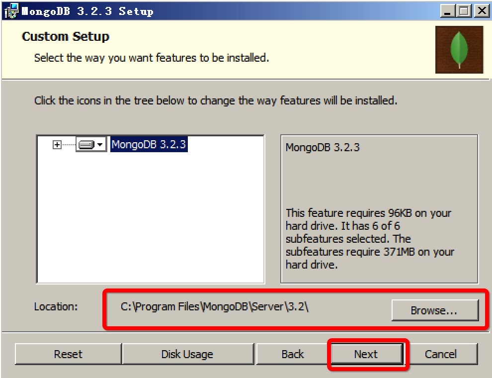
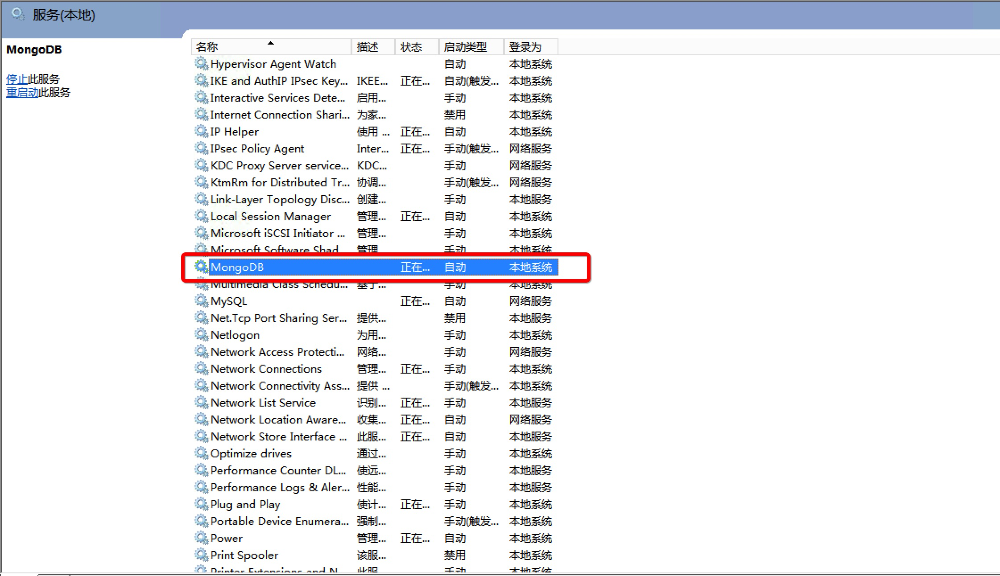

安装 Mongodb
1. 下载 Mongodb
2. Windows 下安装 Mongodb
第一步：运行 Mongodb 安装包；


第二步：设置安装位置；


第三步：完成安装；


3. 配置 Mongodb 为 Windows 服务
这里是把mongodb设置为windows服务，并且开启认证。
第一步：启动安装好的 Mongodb
Script："bin\mongod.exe" --config=D:\gbros\mongodb\mongod.cfg
第二步：通过操作 Mongodb 客户端，增加超级管理员
use admin
db.createUser(
{
user: "root",
pwd: "test@2016",
roles:
[
{
role: "userAdminAnyDatabase",
db: "admin"
}
]
}
)
第三步：把 Mongodb 设置为 Windows
在 Windows 命令窗口中运行以下命令，把 mongodb 加入 Windows 服务：
sc.exe create MongoDB binPath= "bin\mongod.exe --auth --service --config=\"D:\gbros\mongodb\mongod.cfg\"" DisplayName= "MongoDB" start= "auto"
注意：以上命令中的 binPath 和 config 路径设置为正确路径； DisplayName 为 Windows 中mongodb服务名称，start 为 mongodb 启动类型；
4. 启动 Mongodb服务，创建存储数据库并配置数据库管理员
打开 Windows 服务界面，启动 mongodb 服务；

创建数据库，并增加该数据库管理员
首先进行超级管理员认证：
use admin
db.auth('root','test@2016')
创建数据库及数据库管理员
use ead
db.createUser({"user": "admin","pwd": "test@2016","roles": ["readWrite","dbAdmin"]})